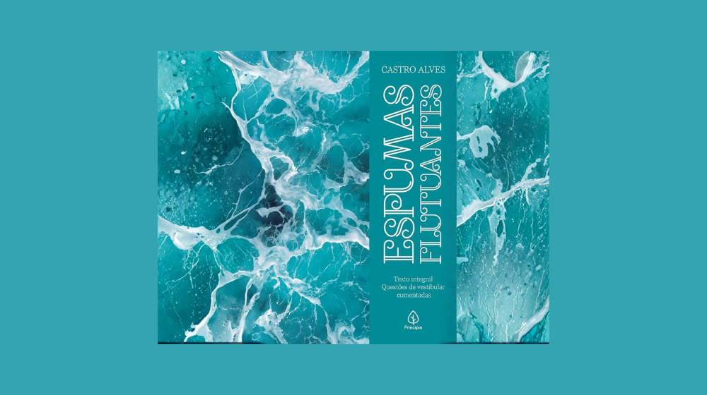
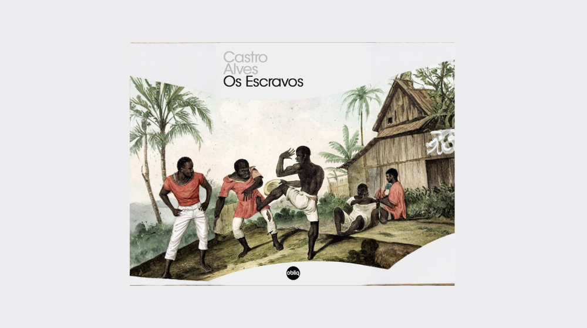
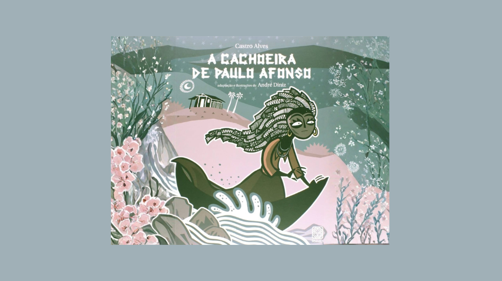

Espumas Flutuantes
Esta é a única coleção de poemas publicada em vida por Castro Alves. Reúne versos que exploram temas como amor, natureza e reflexão sobre a vida, com a sensibilidade típica do Romantismo brasileiro. A obra consagrou o poeta ainda jovem e mostra a riqueza da sua poesia.

Os Escravos
Uma das obras mais importantes do poeta, reúne poemas abolicionistas e com forte crítica social sobre a escravidão no Brasil. Ainda hoje ela é lembrada por expressar um grito pela liberdade e direitos humanos, dando a Castro Alves o apelido de “poeta dos escravos”.

A Cachoeira de Paulo Afonso
Publicada originalmente como parte de Os Escravos, esta obra destaca poemas inspirados na famosa cachoeira do rio São Francisco e combina imagens da natureza com o olhar social e humano característico do autor.